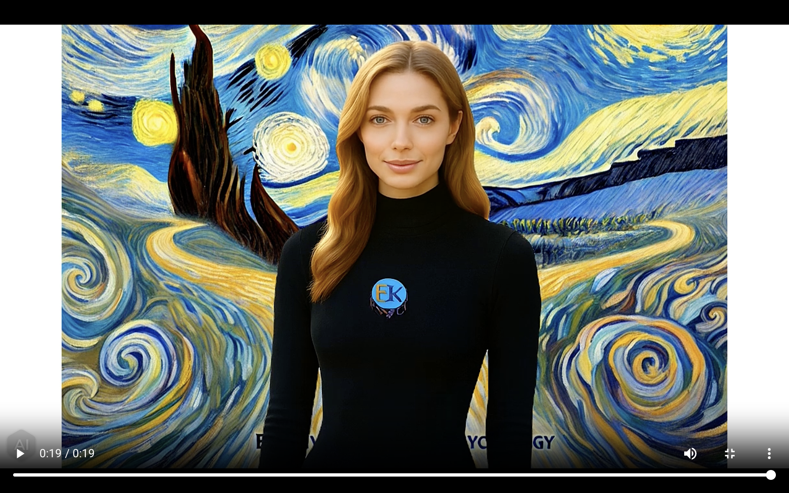

EmotiKnow — Emma (Voice Companion)

Start
Hang Up
Target width (mouth)
Smooth (higher = slower)
Gate (ignore background)
Voice “personality”
Warm (gentle, kind)
Bright (friendly)
Soft (quiet)
VU
Tip: Click Emma’s
real mouth
once to anchor the overlay. The position & sizing are saved per browser.
[app] ready.